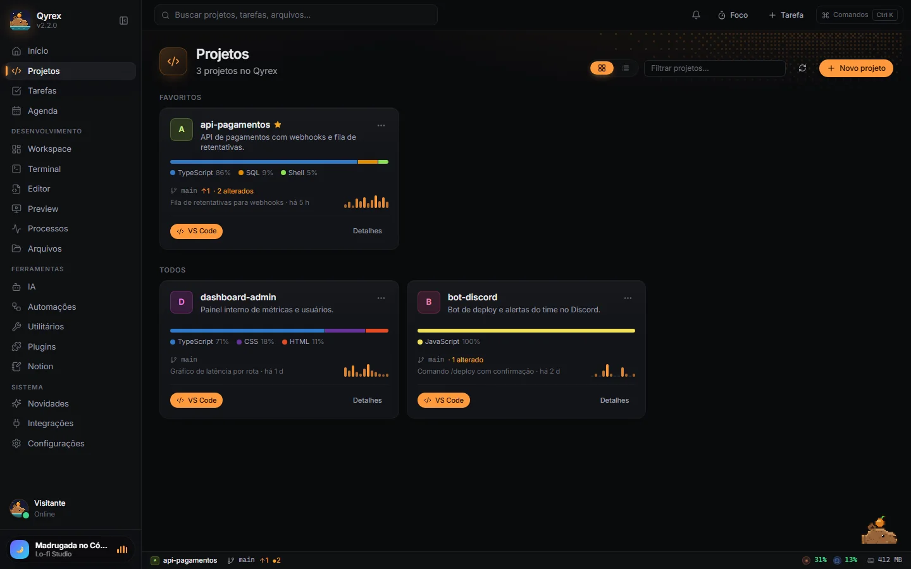
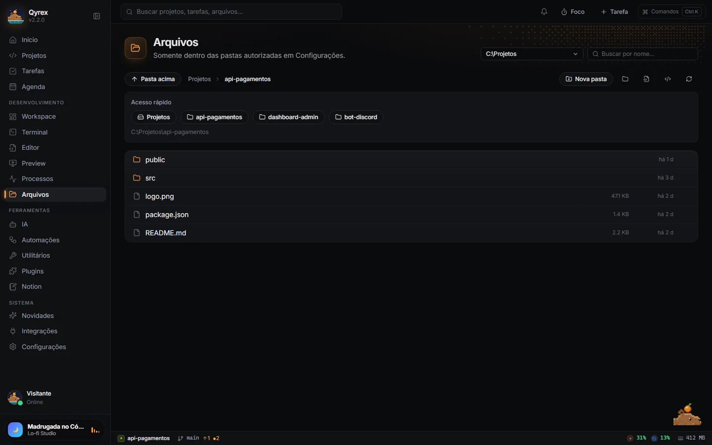

Documentação
Do primeiro projeto ao seu fluxo.
Guias diretos para configurar o Qyrex e usar o workspace.
Primeiros passos
Instale o app, autorize uma pasta e abra seu primeiro projeto. O Qyrex reúne o contexto, mas as ferramentas do projeto continuam instaladas no seu PC.
- Baixe o instalador oficial.
- Autorize, por exemplo,
C:\Projetos. - Adicione um projeto e abra seu workspace.
Instalação
Use Windows 10/11 64-bit. Abra o Qyrex-Setup.exe e siga o assistente, sem precisar de administrador. O app recebe atualizações automaticamente.
Configuração inicial
Em Configurações → Pastas autorizadas, escolha onde ficam os projetos. O acesso aos arquivos fica limitado a essas pastas; não autorize a raiz do disco, pastas do sistema ou sua pasta pessoal inteira.
Em Integrações, configure só o que precisar. Chaves e tokens são guardados cifrados no cofre do Windows.
- GitHub: token pessoal ou
ghjá autenticado. - Google Agenda: credenciais OAuth de app para computador.
- Notion: token de integração interna, com as páginas compartilhadas com ela.
- Claude/OpenAI: assinatura pelo CLI autenticado ou API key; Gemini: API key.
Projetos
Organize os repositórios pela pasta local. Abra VS Code, terminal ou Explorer no contexto do projeto. Use status ativo, pausado ou concluído e arquive o que não participa mais do dia a dia.

Workspace
Abra vários projetos em abas. Use painéis de arquivos, terminal, Git, preview, IA, tarefas, notas, processos e monitor. Divida o espaço, arraste abas ou maximize um painel.
Layouts disponíveis: Desenvolvimento, Debug, Git e Foco. O layout é salvo por projeto; restauração de sessões de terminal ainda está em desenvolvimento.
Terminal
Use o terminal integrado para comandos na pasta do projeto. Para acompanhar scripts longos com saída ao vivo e controle de processos, use o painel Processos.
Alterne entre abas e grade. Com três sessões abertas, os terminais ficam lado a lado e preenchem a área disponível.
Exemplo: em um projeto que possui o script dev no package.json, execute npm run dev. É preciso ter Node.js/npm instalados.
Arquivos
Use Acesso rápido para ir direto aos projetos e pastas autorizadas. O caminho completo fica visível, os segmentos do caminho são clicáveis e Pasta acima retorna um nível.
Busque por nome, selecione um arquivo para pré-visualizar ou abra-o no editor. A navegação continua limitada às pastas autorizadas.

Git
Confira o diff e marque os arquivos que devem entrar no commit. Crie ou troque de branch, faça fetch, pull e push, sem --force. O status de CI vem do GitHub Actions.
Revise a mensagem sugerida pela IA antes de confirmar o commit. Staging por trecho ainda está planejado.
IA
Abra Integrações. Para usar a assinatura, escolha Claude com Claude Code ou ChatGPT/OpenAI com Codex já logados no PC. Você também pode informar uma API key de Claude, OpenAI ou Gemini.
Use o AI Council para reunir respostas de modelos. A IA também sugere mensagem de commit a partir dos arquivos marcados e resume a daily. Comandos sugeridos precisam de confirmação para executar.
Preview
Inicie o servidor local do projeto e abra seu endereço, como http://localhost:5173. O Preview aceita somente localhost e fica isolado do app.
Alterne entre desktop, tablet, celular e tamanho personalizado. Use zoom, console da página e DevTools para investigar o que está renderizado.
Processos e Monitor
Selecione um script do package.json ou informe um comando livre, revise e confirme. Acompanhe a saída ao vivo e as URLs detectadas. Reinicie ou encerre o processo quando precisar; os processos são encerrados ao fechar o Qyrex.
Na aba Portas, confira qual processo está usando uma porta e confirme antes de liberá-la.
A página abre no Monitor, com CPU e memória do próprio Qyrex em destaque. Os totais do PC servem de referência, e os processos iniciados pelo app têm seu consumo individual. Ajuste o intervalo de leitura conforme precisar.
Plugins
Abra Plugins → Instalar pacote local e escolha a pasta com qyrex-plugin.json ou o próprio arquivo JSON.
Exemplo de manifesto:
{
"id": "autor.links-do-time",
"name": "Links do time",
"version": "1.0.0",
"author": "Seu nome",
"description": "Atalhos para a documentação do time.",
"qyrex": "2.2.0",
"permissions": [
"quickLinks"
],
"contributes": {
"quickLinks": [
{
"title": "Guia de estilo",
"url": "https://example.com/guia"
}
]
}
}
Permissões existentes:
-
quickLinks: links rápidos. -
projectTemplates: modelos comfolders,filesde texto com{name}etasks. -
notes: notas.
Campos desconhecidos são recusados. Nenhum código de terceiros roda. Notas do projeto, Links rápidos e Modelos de projeto já vêm embutidos.
Atalhos
- Ctrl+K
- Paleta de comandos
- Ctrl+Shift+T
- Nova tarefa
- Ctrl+Shift+P
- Projetos
- Ctrl+Shift+A
- IA
Solução de problemas
O SmartScreen bloqueou o instalador
O instalador não tem assinatura digital. Depois de conferir a origem oficial, use Mais informações → Executar assim mesmo.
A porta está ocupada
Abra a aba Portas, confira o processo responsável e confirme a liberação da porta.
A IA não conecta
Revise o provedor e a autenticação em Integrações. No modo assinatura, confira se Claude Code/Codex estão logados no PC. No modo API key, confira a chave. A conexão precisa de internet.
Nenhuma seção encontrada. Tente outro termo ou limpe a busca.